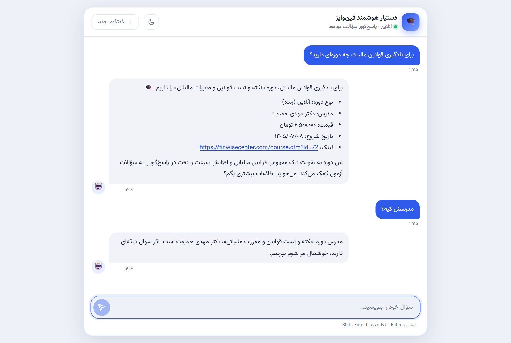
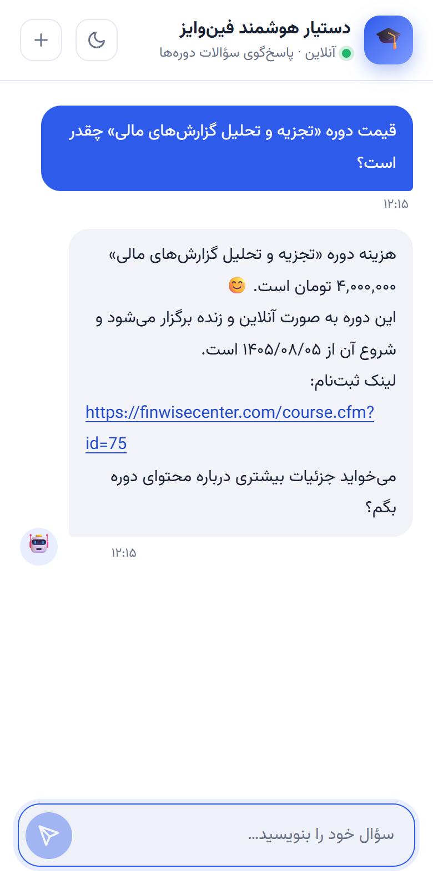
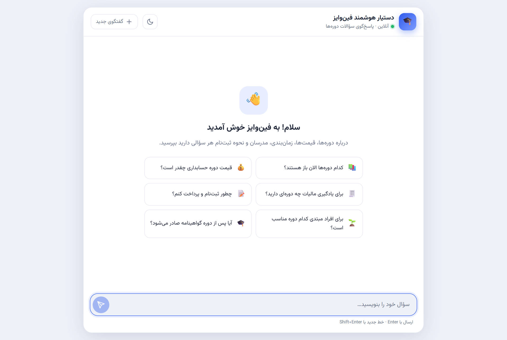

ویدیوی دمو
حدود ۲ دقیقه: گفتگو با ربات، سپس پنل مدیریت. (پاسخ تایپشده کارشناس در ویدیو فقط نمونه است و ذخیره نشده است.)
چگونه کار میکند؟
هر پرسش، پیش از رسیدن به مدل زبانی، از این مسیر میگذرد تا پاسخ فقط از اطلاعات رسمی مرکز ساخته شود.
جستوجوی ترکیبی
BM25 فارسیشده برای کلیدواژهها و Embedding برای مفهوم، با ادغام رتبهها (RRF) در LlamaIndex.
زمینه دقیق
فهرست کامل دورهها + بهترین قطعهها؛ برای هر دوره، قیمت، تاریخ و وضعیت ثبتنام همیشه همراه است.
پاسخ مقید
مدل فقط بر پایه همین منابع پاسخ میدهد، به زبان کاربر و بهصورت متن ساده مناسب تلگرام.
ارجاع به انسان
اگر پاسخ در منابع نباشد، سؤال برای کارشناس میرود و پاسخ او به کاربر برمیگردد و میتواند به پرسشهای متداول اضافه شود.
۱۰ پرسش و پاسخ واقعی
این پرسشها از همین سامانه اجرا شدهاند (مدل gpt-4o-mini، جستوجوی ترکیبی روی دادههای واقعی سایت). قیمتها و لینکهای همه پاسخها با پایگاه داده تطبیق داده شدهاند.
رابط گفتگو
فارسی و راستچین، با حالت تاریک، ذخیره گفتگو، کپی پاسخ و تلاش دوباره هنگام خطا؛ روی دسکتاپ و موبایل.



پنل مدیریت
مدیریت دورهها و دانش ربات، مشاهده گفتگوها و پاسخ به سؤالاتی که ربات نتوانسته جواب دهد؛ همه به فارسی.